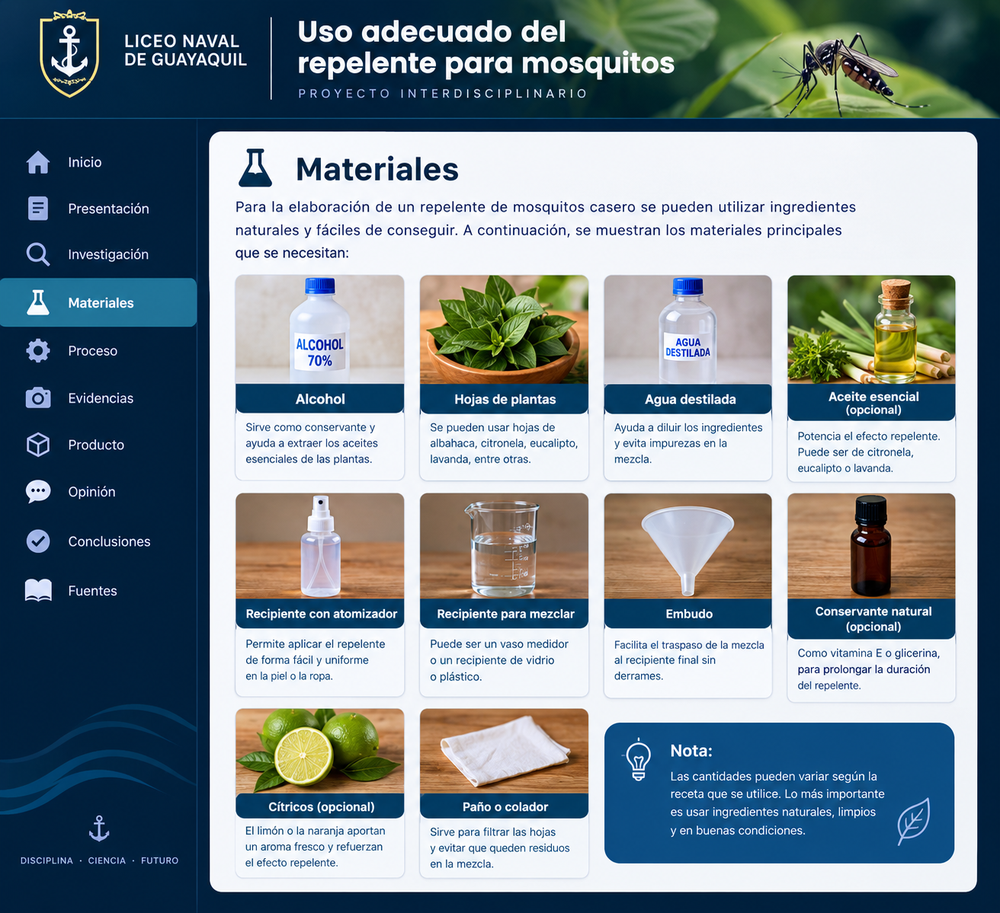

Para conocer el uso correcto del repelente y evitar aplicaciones incorrectas.
Prevenir una picadura también es aprender.
Este proyecto nació de una pregunta sencilla: ¿sabemos realmente cómo usar correctamente un repelente para mosquitos? Investigamos qué son los repelentes, cómo funcionan, cuándo utilizarlos, cómo aplicarlos y qué precauciones debemos tener.
Elegimos este tema porque los mosquitos pueden estar relacionados con la transmisión de enfermedades y la prevención forma parte del cuidado de nuestra salud. Buscamos información en fuentes oficiales y organizamos los conocimientos de manera clara para nuestra comunidad educativa.
Para promover hábitos responsables dentro de la comunidad educativa.
Investigando fuentes confiables y organizando la información.
Conociendo el problema.
Organizamos la investigación en preguntas y respuestas para comprender el uso adecuado del repelente.
01 · ¿Qué es un repelente?
Es una sustancia que se aplica sobre la piel expuesta o la ropa para ayudar a alejar mosquitos y otros insectos. No es un tratamiento para una enfermedad.
02 · ¿Para qué sirve?
Es una medida de prevención frente a las picaduras y puede ayudar a disminuir la exposición a mosquitos en lugares donde estos pueden transmitir enfermedades.
03 · ¿Cómo funciona?
Los repelentes pueden contener ingredientes activos como DEET, icaridina o picaridina, IR3535 u otros autorizados. Estos interfieren con la capacidad del mosquito para localizar a una persona.
04 · ¿Cuándo debe utilizarse?
Cuando exista exposición a mosquitos, especialmente al estar al aire libre. La reaplicación debe seguir las instrucciones de la etiqueta.
05 · ¿Cómo debe aplicarse correctamente?
- Aplicar sobre la piel expuesta siguiendo las indicaciones del envase.
- Evitar ojos, boca, heridas y piel irritada.
- Para la cara, poner primero el producto en las manos.
- No aplicarlo directamente debajo de la ropa.
- Si se usa protector solar, aplicar primero el protector y después el repelente.
- Al dejar de necesitar protección, lavar la piel con agua y jabón.
06 · ¿Qué precauciones debemos tener?
Conservar el producto en su envase original y fuera del alcance de niños pequeños. En situaciones especiales, seguir la etiqueta y consultar a un profesional de la salud.
07 · ¿Qué errores deben evitarse?
- No aplicarlo sobre heridas o piel irritada.
- No rociarlo cerca de alimentos.
- No usar productos sin autorización sanitaria correspondiente.
- No aplicarlo directamente en el rostro de niños pequeños.
- No reaplicarlo con mayor frecuencia de la indicada.
08 · ¿Por qué leer la etiqueta?
La etiqueta indica ingrediente activo, concentración, forma de aplicación, advertencias y otras indicaciones importantes.
09 · Prevención y tratamiento no son lo mismo
La prevención busca reducir el riesgo antes de un problema. El repelente es una herramienta preventiva y no sustituye la atención médica.
Materiales para elaborar un repelente casero.
Para un proyecto demostrativo se pueden reunir ingredientes vegetales y utensilios limpios. Entre los materiales que suelen mencionarse están hojas aromáticas, agua destilada, recipientes y un atomizador.

Ilustración de referencia de los materiales para el proyecto.
Se menciona en algunas preparaciones para extraer compuestos vegetales. Es inflamable y puede irritar la piel; no mezclar ni aplicar sin una receta validada.
Citronela, menta, albahaca o romero pueden servir para una demostración de extracción vegetal.
Se utiliza en algunas mezclas para diluir ingredientes. No garantiza que el producto sea seguro o eficaz.
Recipiente para guardar una muestra identificada, sin confundirla con productos comerciales.
Ayuda a medir líquidos durante la demostración.
Facilita pasar el líquido al recipiente sin derramarlo.
Permite separar restos de hojas de una muestra vegetal.
Ayudan a mantener ordenada la actividad e identificar el contenido.
Importante: los repelentes caseros con plantas no tienen eficacia garantizada y podrían no proteger contra las picaduras. No apliques esta mezcla en la piel ni la presentes como repelente probado. Para prevenir picaduras, se recomienda un producto registrado y usado según su etiqueta. Fuente: CDC.
Nuestro proceso.
Agrega tus fotografías reales en la carpeta assets y reemplaza los cuadros por imágenes.
📷FOTO 1
InvestigaciónBúsqueda de información.
📷FOTO 2
AnálisisRevisión de etiquetas.
📷FOTO 3
ElaboraciónCreación del producto.
📷FOTO 4
SocializaciónPresentación del proyecto.
Un recurso para nuestra comunidad.
Guía educativa
Material digital para explicar el uso adecuado del repelente.
Informar y prevenir
Promover hábitos responsables.
Comunidad educativa
Estudiantes, familias y docentes.
Investigar con fuentes
Aprendimos a contrastar información.
Nuestra opinión: prevenir también es aprender.
Cuando comenzamos esta investigación pensábamos que hablar del repelente para mosquitos era algo sencillo. Sin embargo, descubrimos que detrás de una aplicación común existen decisiones importantes: elegir un producto adecuado, leer su etiqueta, conocer sus indicaciones y evitar errores.
También comprendimos que la prevención no depende de una sola acción. El uso correcto del repelente puede formar parte de una estrategia de prevención junto con otras medidas, como evitar lugares con alta presencia de mosquitos y eliminar recipientes donde pueda acumularse agua.
Uno de los principales aprendizajes fue la importancia de diferenciar información confiable de lo que simplemente circula entre las personas. Consultar organismos oficiales nos permitió construir un contenido más responsable.
Como estudiantes de Primero de Bachillerato, este proyecto nos enseñó que investigar también significa cuestionar, comprobar y comunicar información de manera responsable.
¿Qué aprendimos?
- El repelente es una herramienta de prevención. Debe utilizarse siguiendo las instrucciones del producto.
- Leer la etiqueta es fundamental. Contiene indicaciones y advertencias importantes.
- Prevenir requiere varias medidas. El repelente puede acompañarse de otras acciones.
- Las fuentes confiables son necesarias. En temas de salud debemos consultar organismos reconocidos.
- El trabajo en equipo fortalece el aprendizaje. Investigar y comunicar juntos desarrolla pensamiento crítico.
Fuentes consultadas.
- Ministerio de Salud Pública del Ecuador — prevención del dengue y enfermedades transmitidas por mosquitos.
- Organización Panamericana de la Salud (OPS/OMS) — dengue, prevención y tratamiento.
- Centers for Disease Control and Prevention (CDC) — prevención de picaduras.
- Agencia de Protección Ambiental de Estados Unidos (EPA) — repelentes de insectos.
- MedlinePlus, Biblioteca Nacional de Medicina de Estados Unidos — seguridad de repelentes.